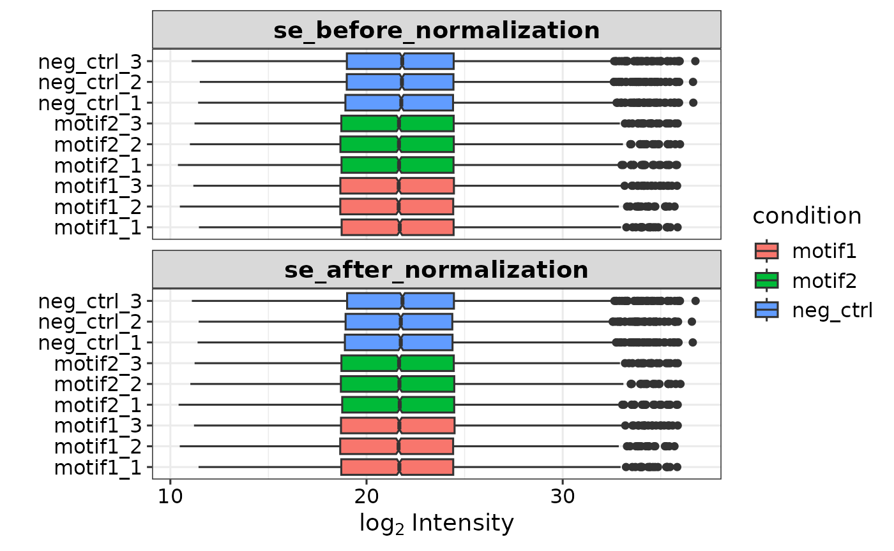
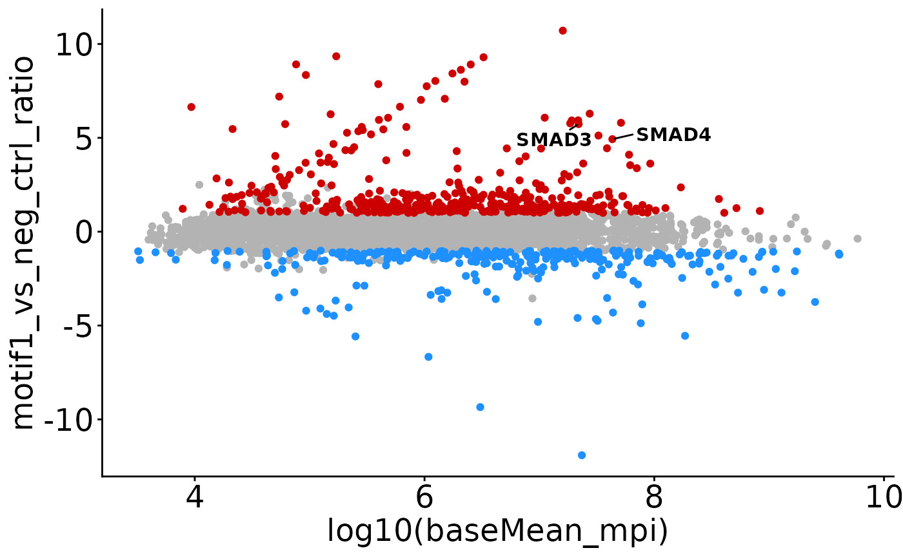
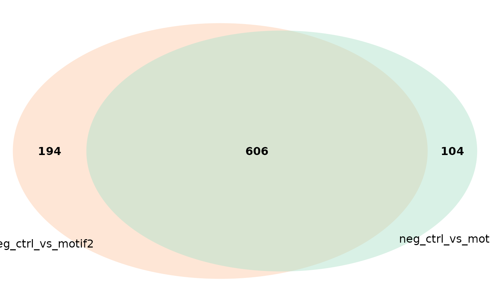
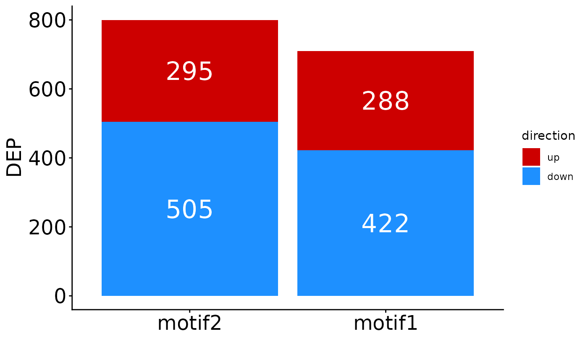

Introduction
This package can be used to process and analyze mass spec data generated by DIANN. It mainly uses the DEP package under the hood, so you can use all DEP functions once you have created the summarizedExperiment object (check out the DEP vignette). Also included are some visualization function that I prefer over the default DEP options.
Installation
Install and load the package from github with the following code (you can ignore the warnings):
if (!require('BiocManager', quietly = T)){
install.packages('BiocManager')
}
if (!require('devtools', quietly = T)){
install.packages('devtools')
}
install_github('DijkJel/DIANNmv')
library(DIANNmv)
#> Warning: replacing previous import 'SummarizedExperiment::start' by
#> 'stats::start' when loading 'DIANNmv'
#> Warning: replacing previous import 'SummarizedExperiment::end' by 'stats::end'
#> when loading 'DIANNmv'
#> Warning: replacing previous import 'MsCoreUtils::smooth' by 'stats::smooth'
#> when loading 'DIANNmv'
library(SummarizedExperiment)
#> Loading required package: MatrixGenerics
#> Loading required package: matrixStats
#>
#> Attaching package: 'MatrixGenerics'
#> The following objects are masked from 'package:matrixStats':
#>
#> colAlls, colAnyNAs, colAnys, colAvgsPerRowSet, colCollapse,
#> colCounts, colCummaxs, colCummins, colCumprods, colCumsums,
#> colDiffs, colIQRDiffs, colIQRs, colLogSumExps, colMadDiffs,
#> colMads, colMaxs, colMeans2, colMedians, colMins, colOrderStats,
#> colProds, colQuantiles, colRanges, colRanks, colSdDiffs, colSds,
#> colSums2, colTabulates, colVarDiffs, colVars, colWeightedMads,
#> colWeightedMeans, colWeightedMedians, colWeightedSds,
#> colWeightedVars, rowAlls, rowAnyNAs, rowAnys, rowAvgsPerColSet,
#> rowCollapse, rowCounts, rowCummaxs, rowCummins, rowCumprods,
#> rowCumsums, rowDiffs, rowIQRDiffs, rowIQRs, rowLogSumExps,
#> rowMadDiffs, rowMads, rowMaxs, rowMeans2, rowMedians, rowMins,
#> rowOrderStats, rowProds, rowQuantiles, rowRanges, rowRanks,
#> rowSdDiffs, rowSds, rowSums2, rowTabulates, rowVarDiffs, rowVars,
#> rowWeightedMads, rowWeightedMeans, rowWeightedMedians,
#> rowWeightedSds, rowWeightedVars
#> Loading required package: GenomicRanges
#> Loading required package: stats4
#> Loading required package: BiocGenerics
#> Loading required package: generics
#>
#> Attaching package: 'generics'
#> The following objects are masked from 'package:base':
#>
#> as.difftime, as.factor, as.ordered, intersect, is.element, setdiff,
#> setequal, union
#>
#> Attaching package: 'BiocGenerics'
#> The following objects are masked from 'package:stats':
#>
#> IQR, mad, sd, var, xtabs
#> The following objects are masked from 'package:base':
#>
#> anyDuplicated, aperm, append, as.data.frame, basename, cbind,
#> colnames, dirname, do.call, duplicated, eval, evalq, Filter, Find,
#> get, grep, grepl, is.unsorted, lapply, Map, mapply, match, mget,
#> order, paste, pmax, pmax.int, pmin, pmin.int, Position, rank,
#> rbind, Reduce, rownames, sapply, saveRDS, table, tapply, unique,
#> unsplit, which.max, which.min
#> Loading required package: S4Vectors
#>
#> Attaching package: 'S4Vectors'
#> The following object is masked from 'package:utils':
#>
#> findMatches
#> The following objects are masked from 'package:base':
#>
#> expand.grid, I, unname
#> Loading required package: IRanges
#> Loading required package: GenomeInfoDb
#> Loading required package: Biobase
#> Welcome to Bioconductor
#>
#> Vignettes contain introductory material; view with
#> 'browseVignettes()'. To cite Bioconductor, see
#> 'citation("Biobase")', and for packages 'citation("pkgname")'.
#>
#> Attaching package: 'Biobase'
#> The following object is masked from 'package:MatrixGenerics':
#>
#> rowMedians
#> The following objects are masked from 'package:matrixStats':
#>
#> anyMissing, rowMedians
library(ggplot2)Required input data & example data
As input files you will need the protein (report.pg_matrix) and peptide (report.pr_matrix) DIANN output files. In addition, you need an experimental design table. This package comes with these files from a DNA pull down experiment for demonstration goals.You can inspect the data with ‘expDesign’, ‘report.pg_matrix’, and’report.pr_matrix’.
head(report.pg_matrix)
#> Protein.Group Protein.Names
#> 1 A0A075B6H7;A0A0C4DH55;P01624 KV315_HUMAN;KV37_HUMAN;KVD07_HUMAN
#> 2 A0A0A0MRZ8;P04433 KV311_HUMAN;KVD11_HUMAN
#> 3 A0A0B4J2D5;P0DPI2 GAL3A_HUMAN;GAL3B_HUMAN
#> 4 A0A183 LCE6A_HUMAN
#> 5 A0A1B0GTR4 SPRR5_HUMAN
#> 6 A0A1B0GTU1 ZC11B_HUMAN
#> Genes
#> 1 IGKV3-15;IGKV3-7;IGKV3D-7
#> 2 IGKV3-11;IGKV3D-11
#> 3 GATD3;GATD3B
#> 4 LCE6A
#> 5 SPRR5
#> 6 ZC3H11B
#> First.Protein.Description
#> 1 Probable non-functional immunoglobulin kappa variable 3-7
#> 2 Immunoglobulin kappa variable 3D-11
#> 3 Putative glutamine amidotransferase-like class 1 domain-containing protein 3B, mitochondrial
#> 4 Late cornified envelope protein 6A
#> 5 Putative small proline-rich protein 5
#> 6 Zinc finger CCCH domain-containing protein 11B
#> neg_ctrl_1 neg_ctrl_2 neg_ctrl_3 motif1_1 motif1_2 motif1_3 motif2_1 motif2_2
#> 1 35045.4 NA NA 60838.8 56361.50 45830.7 NA 41375.0
#> 2 13531.4 NA NA 26054.8 NA 50914.5 20547.4 NA
#> 3 50098.9 36549.70 43047.0 29253.3 25503.00 47893.5 36321.2 25036.7
#> 4 92060.5 92580.80 NA 49035.6 67543.30 33898.6 NA 33731.9
#> 5 57016.4 58424.50 NA 215301.0 77330.30 NA NA 69601.4
#> 6 10773.4 9745.44 17668.3 16804.8 9534.48 17388.9 16438.0 25568.2
#> motif2_3
#> 1 155669.0
#> 2 66331.5
#> 3 28612.7
#> 4 NA
#> 5 47255.0
#> 6 NA
#
#
#
head(report.pr_matrix)
#> Protein.Group Protein.Ids Protein.Names Genes
#> 1 Q86U42 Q86U42 PABP2_HUMAN PABPN1
#> 2 Q8NFD5 Q8NFD5;Q9Y651 ARI1B_HUMAN ARID1B
#> 3 Q96JP5 Q96JP5 ZFP91_HUMAN ZFP91
#> 4 Q16585 Q16585 SGCB_HUMAN SGCB
#> 5 P36578 P36578 RL4_HUMAN RPL4
#> 6 P36578 P36578 RL4_HUMAN RPL4
#> First.Protein.Description Proteotypic
#> 1 Polyadenylate-binding protein 2 1
#> 2 AT-rich interactive domain-containing protein 1B 0
#> 3 E3 ubiquitin-protein ligase ZFP91 1
#> 4 Beta-sarcoglycan 1
#> 5 60S ribosomal protein L4 1
#> 6 60S ribosomal protein L4 1
#> Stripped.Sequence Modified.Sequence Precursor.Charge Precursor.Id
#> 1 AAAAAAAAAAGAAGGR AAAAAAAAAAGAAGGR 2 AAAAAAAAAAGAAGGR2
#> 2 AAAAAAAAAAR AAAAAAAAAAR 2 AAAAAAAAAAR2
#> 3 AAAAAAAAAVSR AAAAAAAAAVSR 2 AAAAAAAAAVSR2
#> 4 AAAAAAAAEQQSSNGPVKK AAAAAAAAEQQSSNGPVKK 3 AAAAAAAAEQQSSNGPVKK3
#> 5 AAAAAAALQAK AAAAAAALQAK 1 AAAAAAALQAK1
#> 6 AAAAAAALQAK AAAAAAALQAK 2 AAAAAAALQAK2
#> neg_ctrl_1 neg_ctrl_2 neg_ctrl_3 motif1_1 motif1_2 motif1_3
#> 1 14201.4 17402.1 22342.6 9617.31 12355.2 10824.8
#> 2 56500900.0 59560000.0 64613700.0 51690200.00 23066300.0 40866800.0
#> 3 12186100.0 12535000.0 15420900.0 28513800.00 32014600.0 43538700.0
#> 4 NA NA NA 8669.59 NA NA
#> 5 3729720.0 4311790.0 2780390.0 3405560.00 4964600.0 4373450.0
#> 6 71649900.0 31629500.0 43972100.0 67226000.00 48326400.0 47199700.0
#> motif2_1 motif2_2 motif2_3
#> 1 11469.50 11064 9728.03
#> 2 30508900.00 30926500 39211400.00
#> 3 41882400.00 53996100 30695300.00
#> 4 8965.43 NA NA
#> 5 6242340.00 3104850 6942140.00
#> 6 32204200.00 40380400 39495700.00
#
#
#
expDesign
#> label condition replicate
#> 1 neg_ctrl_1 neg_ctrl 1
#> 2 neg_ctrl_2 neg_ctrl 2
#> 3 neg_ctrl_3 neg_ctrl 3
#> 4 motif1_1 motif1 1
#> 5 motif1_2 motif1 2
#> 6 motif1_3 motif1 3
#> 7 motif2_1 motif2 1
#> 8 motif2_2 motif2 2
#> 9 motif2_3 motif2 3As you can see in expDesign, there are three conditions with 3 replicates each: Two variations of a TF binding motif and one negative control that can be used for both motifs. The names in the ‘label’ column correspond to the intensity columns in report.pg_matrix and should be in the same order and identically named.
Prepare the Summarized Experiment object
The report.pg_matrix, report.pr_matrix and expDesign are combined in a summarizedExperiment (se) object that is used for downstream analysis and plotting.
To create an se object, you can run the prepare_se() function with the report.pg_matrix file and associated experimental design. You can specify if and what type of imputation is done. The default is ‘knn’, which is better for DIA data I think. For DDA data, ‘MinProb’ would be the good. When ‘none’ is entered for the impute parameter, no imputation is done. Additionally, you can filter on missing values (missing_thr), and potential contaminants are removed by default. (Source: contaminants.txt file from maxquant).
se <- prepare_se(report.pg_matrix, expDesign) # without peptide information#> Imputing along margin 1 (features/rows).
#> Warning in knnimp(x, k, maxmiss = rowmax, maxp = maxp): 36 rows with more than 50 % entries missing;
#> mean imputation used for these rows
#> Cluster size 5548 broken into 2022 3526
#> Cluster size 2022 broken into 673 1349
#> Done cluster 673
#> Done cluster 1349
#> Done cluster 2022
#> Cluster size 3526 broken into 1495 2031
#> Done cluster 1495
#> Cluster size 2031 broken into 1030 1001
#> Done cluster 1030
#> Done cluster 1001
#> Done cluster 2031
#> Done cluster 3526
se
#> class: SummarizedExperiment
#> dim: 5584 9
#> metadata(0):
#> assays(1): ''
#> rownames(5584): A2M A2ML1 ... ZYX ZZZ3
#> rowData names(9): Protein.Group Protein.Names ... imputed num_NAs
#> colnames(9): neg_ctrl_1 neg_ctrl_2 ... motif2_2 motif2_3
#> colData names(4): label ID condition replicateIf you provide the report.pr_matrix alongside the report.pg_matrix, peptide information is automatically added and you can filter on a minimal number of razor/unique peptides (min_pep, default = 0). Make sure the sample column names are identical and match the label column in the experimental design.
# Add peptide information and remove all proteinGroups with <2 total
# razor/unique peptides
se <- prepare_se(report.pg_matrix, expDesign, report.pr_matrix, min_pep = 1)
#> Imputing along margin 1 (features/rows).
#> Warning in knnimp(x, k, maxmiss = rowmax, maxp = maxp): 19 rows with more than 50 % entries missing;
#> mean imputation used for these rows
#> Cluster size 5237 broken into 2152 3085
#> Cluster size 2152 broken into 1645 507
#> Cluster size 1645 broken into 656 989
#> Done cluster 656
#> Done cluster 989
#> Done cluster 1645
#> Done cluster 507
#> Done cluster 2152
#> Cluster size 3085 broken into 1977 1108
#> Cluster size 1977 broken into 976 1001
#> Done cluster 976
#> Done cluster 1001
#> Done cluster 1977
#> Done cluster 1108
#> Done cluster 3085
se
#> class: SummarizedExperiment
#> dim: 5256 9
#> metadata(0):
#> assays(2): '' peptide_info
#> rownames(5256): A2M A2ML1 ... ZYX ZZZ3
#> rowData names(11): Protein.Group Protein.Names ... imputed num_NAs
#> colnames(9): neg_ctrl_1 neg_ctrl_2 ... motif2_2 motif2_3
#> colData names(4): label ID condition replicateThe summarizedExperiment object stores a lot of information. As you can see from the output above, it consists of 5584 proteinGroups (rows) and 9 samples (columns). Furthermore, the experimental design is stored as ‘colData’, and extra information is stored as ‘rowData’. The log2 transformed intensities form the main assay. Furthermore, if the report.pr_matrix file was provided, a second assay is added. For a detailed description of the structure of summarizedExperiments, check its documentation. In short, to access different parts of data:
intensities <- assay(se) # log2 protein intensities
peptides <- assay(se, 'peptide_info') # peptide numbers
rd = as.data.frame(rowData(se))
colnames(rd) # Information for each proteinGroup in the se.
#> [1] "Protein.Group" "Protein.Names"
#> [3] "Genes" "First.Protein.Description"
#> [5] "n_total" "Potential.contaminant"
#> [7] "name" "ID"
#> [9] "npep_total" "imputed"
#> [11] "num_NAs"
cd = as.data.frame(colData(se))
cd # The experimental design
#> label ID condition replicate
#> neg_ctrl_1 neg_ctrl_1 neg_ctrl_1 neg_ctrl 1
#> neg_ctrl_2 neg_ctrl_2 neg_ctrl_2 neg_ctrl 2
#> neg_ctrl_3 neg_ctrl_3 neg_ctrl_3 neg_ctrl 3
#> motif1_1 motif1_1 motif1_1 motif1 1
#> motif1_2 motif1_2 motif1_2 motif1 2
#> motif1_3 motif1_3 motif1_3 motif1 3
#> motif2_1 motif2_1 motif2_1 motif2 1
#> motif2_2 motif2_2 motif2_2 motif2 2
#> motif2_3 motif2_3 motif2_3 motif2 3Add peptide and iBAQ information
The report.pr_matrix and report.pg_matrix files can be used to add peptide number information, iBAQ values, and median peptide intensities, which are an alternative to iBAQ.
Add number of razor/unique peptides
This information is automatically added to the se object when running prepare_se() and providing a report.pr_matrix file (see above). You can also manually add this to the report.pg_matrix() file with the following code.
To get the number of razor/unique peptides per proteinGroup per sample and the total number of razor/unique peptides over all samples, and add these to the report.pg_matrix file:
peptides <- get_nPep_prMatrix(report.pr_matrix)
pg_matrix <- add_peptide_numbers(report.pg_matrix, peptides)This adds new columns with the suffix ‘npep’ to the report.pg_matrix with the number of identified peptides per sample, and ‘n_total’ with the total number of identified razor/unique peptides per proteinGroup.
colnames(pg_matrix)
#> [1] "Protein.Group" "Protein.Names"
#> [3] "Genes" "First.Protein.Description"
#> [5] "neg_ctrl_1" "neg_ctrl_2"
#> [7] "neg_ctrl_3" "motif1_1"
#> [9] "motif1_2" "motif1_3"
#> [11] "motif2_1" "motif2_2"
#> [13] "motif2_3" "neg_ctrl_1_npep"
#> [15] "neg_ctrl_2_npep" "neg_ctrl_3_npep"
#> [17] "motif1_1_npep" "motif1_2_npep"
#> [19] "motif1_3_npep" "motif2_1_npep"
#> [21] "motif2_2_npep" "motif2_3_npep"
#> [23] "n_total"Add iBAQ data
iBAQ values can be added to the pg_matrix file as well. For that, we need the number of theoretically observable peptides, and non-normalized intensities.
The number of iBAQ peptides for reviewed human and mouse uniprot entries are included in the package and can be accessed with:
ibaq_peptides <- DIANNmv::ibaq_peptides
hs <- ibaq_peptides$hs #Human entries
mm <- ibaq_peptides$mm # Mouse entriesIf you do not want to use these, you can create an similar object yourself from a fasta file:
no_ibaq_peptides <- get_ibaq_peptides('path/to/fasta.fasta')Non-normalized intensities can be calculated as sum of individual peptide intensites from the report.pr_matrix file:
intensities <- get_intensities_prMatrix(report.pr_matrix)This is all combined in the the add_iBAQ() function, which addes columns with iBAQ values and a column with the number of iBAQ peptides to the report.pg_matrix. If you use the included iBAQ peptides, you only have to specify the organism. If you use a custom file, you have to specify it with the ‘ibaq_stats’ parameter.
pg <- add_iBAQ(report.pg_matrix, report.pr_matrix, organism = 'hs') # Standard
colnames(pg)
#> [1] "Protein.Group" "Protein.Names"
#> [3] "Genes" "First.Protein.Description"
#> [5] "neg_ctrl_1" "neg_ctrl_2"
#> [7] "neg_ctrl_3" "motif1_1"
#> [9] "motif1_2" "motif1_3"
#> [11] "motif2_1" "motif2_2"
#> [13] "motif2_3" "neg_ctrl_1_iBAQ"
#> [15] "neg_ctrl_2_iBAQ" "neg_ctrl_3_iBAQ"
#> [17] "motif1_1_iBAQ" "motif1_2_iBAQ"
#> [19] "motif1_3_iBAQ" "motif2_1_iBAQ"
#> [21] "motif2_2_iBAQ" "motif2_3_iBAQ"
#> [23] "ibaq_peptides"
The iBAQ values are automatically added to the
summarizedExperiment object when running the prepare_se() function. In
addition, the number of iBAQ peptides is added to the rowData.
pg <- add_iBAQ(report.pg_matrix, report.pr_matrix, organism = 'hs')
se <- prepare_se(pg, expDesign, report.pr_matrix)#> Imputing along margin 1 (features/rows).
#> Warning in knnimp(x, k, maxmiss = rowmax, maxp = maxp): 33 rows with more than 50 % entries missing;
#> mean imputation used for these rows
#> Cluster size 5475 broken into 3183 2292
#> Cluster size 3183 broken into 2053 1130
#> Cluster size 2053 broken into 1034 1019
#> Done cluster 1034
#> Done cluster 1019
#> Done cluster 2053
#> Done cluster 1130
#> Done cluster 3183
#> Cluster size 2292 broken into 1624 668
#> Cluster size 1624 broken into 716 908
#> Done cluster 716
#> Done cluster 908
#> Done cluster 1624
#> Done cluster 668
#> Done cluster 2292
iBAQ <- as.matrix(assay(se, 'iBAQ'))
head(iBAQ)
#> neg_ctrl_1 neg_ctrl_2 neg_ctrl_3 motif1_1 motif1_2 motif1_3
#> A2M 44908.143 43355.8406 64753.94 41528.739 123416.60 21931.53
#> A2ML1 112836.227 154355.9719 88353.84 136172.283 135247.20 156184.82
#> AAAS 595275.548 778864.7519 733462.15 248484.556 725698.24 489673.48
#> AAK1 24854.583 126.1392 26950.56 23150.526 19485.50 22769.03
#> AAR2 29334.317 183248.0889 39214.12 3291.122 35568.44 33472.99
#> AARS1 3359.781 10436.0490 0.00 0.000 2132.97 2367.20
#> motif2_1 motif2_2 motif2_3
#> A2M 4432.100 108122.55 85534.064
#> A2ML1 47171.734 77564.26 106892.719
#> AAAS 278873.133 263530.63 505940.196
#> AAK1 0.000 0.00 21978.459
#> AAR2 201094.172 108991.24 177086.150
#> AARS1 1908.576 3763.05 2011.761
ibaq_pep <- rowData(se)$ibaq_peptides
head(ibaq_pep)
#> [1] 69 64 27 36 18 50Add median peptide intensities
Similarly, median peptide intensities (mpi) can be added. To get the mpi as separate object:
mpi <- get_median_intensities_prMatrix(report.pr_matrix)
head(mpi)
#> protein neg_ctrl_1 neg_ctrl_2 neg_ctrl_3 motif1_1
#> 1 A0A075B6H7;A0A0C4DH55;P01624 35045.4 NA NA 60838.90
#> 2 A0A0A0MRZ8;P04433 13531.4 5577.47 NA 26054.80
#> 3 A0A0B4J2D5;P0DPI2 31083.5 23493.25 17767.3 18834.27
#> 4 A0A183 74635.8 96073.55 NA 64140.95
#> 5 A0A1B0GTR4 56976.9 58384.00 NA 148435.10
#> 6 A0A1B0GTU1 255493.0 9745.44 17668.3 16804.80
#> motif1_2 motif1_3 motif2_1 motif2_2 motif2_3
#> 1 56361.40 45830.7 NA 41375.0 155669.00
#> 2 25558.50 50914.5 20547.4 NA 66331.50
#> 3 249944.00 21172.3 25210.3 192574.0 267984.40
#> 4 78935.65 82479.8 NA 78484.7 NA
#> 5 47525.95 NA 65137.5 71409.6 23997.25
#> 6 9534.49 17388.9 16438.0 25568.2 8499.39To add mpi to the se object directly:
se <- add_median_peptide_intensity(se, report.pr_matrix)
se # an extra assay 'median_peptide_intensities' is added
#> class: SummarizedExperiment
#> dim: 5508 9
#> metadata(0):
#> assays(5): '' iBAQ maxLFQ_iBAQ peptide_info median_peptide_intensities
#> rownames(5508): A2M A2ML1 ... ZYX ZZZ3
#> rowData names(13): Protein.Group Protein.Names ... num_NAs baseMean_mpi
#> colnames(9): neg_ctrl_1 neg_ctrl_2 ... motif2_2 motif2_3
#> colData names(4): label ID condition replicate
mpi <- assay(se, 'median_peptide_intensities')
rd <- as.data.frame(rowData(se))
head(rd$baseMean_mpi) # shows the average mpi per proteinGroup over all samples
#> [1] 339967.8 366450.2 411634.6 600430.1 307316.9 108054.2Differential protein analysis
To perform differential protein expression analysis, you have to run the get_DEPresults() function. There are three main types: ‘manual’ (1 vs 1), ‘control’ (all vs 1), and ‘all’ (all vs all). For ‘manual’, you can also specify the contrasts you want to test by providing a character vector for the ‘tests’ parameter.In addition, you can choose the p.adj cutoff and log2 fold change cutoffs for significant, and the method of FDR correction. The DEP default is ‘fdrtool’, but this has given some weird results in the past. Therefore, the default here is ‘BH’ (Benjamini-Hochberg), which is also the default that limma uses (which DEP uses in the background).
get_DEPresults returns a data frame with statistics for the specified tests, and can be used for visualization afterwards.
# To test a 1 vs 1 comparison
res_man <- get_DEPresults(se, condition1 = 'motif1', condition2 = 'neg_ctrl',
type = 'manual')
#> Tested contrasts: motif1_vs_neg_ctrl
# To test multiple 1 vs 1 comparisons
res_man2 <- get_DEPresults(se,
tests = c('motif1_vs_neg_ctrl', 'motif1_vs_motif2'),
type = 'manual')
#> Tested contrasts: motif1_vs_neg_ctrl, motif1_vs_motif2
# To test all conditions vs 1 reference condition
res_ref <- get_DEPresults(se, ref_condition = 'neg_ctrl', type = 'control')
#> Tested contrasts: motif1_vs_neg_ctrl, motif2_vs_neg_ctrl
# To test all vs all
res <- get_DEPresults(se, type = 'all')
#> Tested contrasts: neg_ctrl_vs_motif1, neg_ctrl_vs_motif2, motif1_vs_motif2Plotting
Volcano plots
The plotVolcano() function returns volcano plots with the specified
significance cutoffs. If more than 1 comparison is present in your
results data frame, a list of volcano plots will be returned which can
be accessed by the ‘$’ operator. Check the help page for plotVolcano()
(?plotVolcano) to see the different options for labeling
specific points in the volcano.
plotVolcano(res_man) # Default volcano plot if one comparison is present.
# labels all significant points (can be a bit much).
volcano_list <- plotVolcano(res_ref, label = '') # returns list of volcano plots
# Don't label anything.
volcano_list$motif1_vs_neg_ctrl # Select which plot you want to see.
# Example of a very ugly volcano plot.
plotVolcano(res_man, pval_cutoff = 0.001, fc_cutoff = 2,
up_color = 'blue', down_color = 'yellow', ns_color = 'green',
label = c('SMAD3', 'SMAD4'))MA-plots
If median_peptide_intensities are added to the se, you can also plot an MA-plot, with abundances on the x-axis, and fold-changes on the y-axis. Significant hits are indicated in blue/red:
Venn diagrams
You can also make a Venn diagram showing overlapping significant proteins. By default, all comparisons present in your results data frame are used, but it can handle five comparisons maximally. You can specify which comparisons to include.
plot_venn_diagram(res) # all comparisons
#> INFO [2025-06-18 13:55:25] [[1]]
#> INFO [2025-06-18 13:55:25] venn_list
#> INFO [2025-06-18 13:55:25]
#> INFO [2025-06-18 13:55:25] $filename
#> INFO [2025-06-18 13:55:25] NULL
#> INFO [2025-06-18 13:55:25]
#> INFO [2025-06-18 13:55:25] $disable.logging
#> INFO [2025-06-18 13:55:25] T
#> INFO [2025-06-18 13:55:25]
#> INFO [2025-06-18 13:55:25] $fill
#> INFO [2025-06-18 13:55:25] colors
#> INFO [2025-06-18 13:55:25]
#> INFO [2025-06-18 13:55:25] $fontfamily
#> INFO [2025-06-18 13:55:25] [1] "sans"
#> INFO [2025-06-18 13:55:25]
#> INFO [2025-06-18 13:55:25] $fontface
#> INFO [2025-06-18 13:55:25] [1] "bold"
#> INFO [2025-06-18 13:55:25]
#> INFO [2025-06-18 13:55:25] $cat.fontfamily
#> INFO [2025-06-18 13:55:25] [1] "sans"
#> INFO [2025-06-18 13:55:25]
#> INFO [2025-06-18 13:55:25] $lty
#> INFO [2025-06-18 13:55:25] [1] 0
#> INFO [2025-06-18 13:55:25]
plot_venn_diagram(res, comparisons = c('neg_ctrl_vs_motif1',
'neg_ctrl_vs_motif2')) # only two comp.
#> INFO [2025-06-18 13:55:25] [[1]]
#> INFO [2025-06-18 13:55:25] venn_list
#> INFO [2025-06-18 13:55:25]
#> INFO [2025-06-18 13:55:25] $filename
#> INFO [2025-06-18 13:55:25] NULL
#> INFO [2025-06-18 13:55:25]
#> INFO [2025-06-18 13:55:25] $disable.logging
#> INFO [2025-06-18 13:55:25] T
#> INFO [2025-06-18 13:55:25]
#> INFO [2025-06-18 13:55:25] $fill
#> INFO [2025-06-18 13:55:25] colors
#> INFO [2025-06-18 13:55:25]
#> INFO [2025-06-18 13:55:25] $fontfamily
#> INFO [2025-06-18 13:55:25] [1] "sans"
#> INFO [2025-06-18 13:55:25]
#> INFO [2025-06-18 13:55:25] $fontface
#> INFO [2025-06-18 13:55:25] [1] "bold"
#> INFO [2025-06-18 13:55:25]
#> INFO [2025-06-18 13:55:25] $cat.fontfamily
#> INFO [2025-06-18 13:55:25] [1] "sans"
#> INFO [2025-06-18 13:55:25]
#> INFO [2025-06-18 13:55:25] $lty
#> INFO [2025-06-18 13:55:25] [1] 0
#> INFO [2025-06-18 13:55:25]
plot_venn_diagram(res, comparisons = c('neg_ctrl_vs_motif1',
'neg_ctrl_vs_motif2'),
colors = c('red', 'blue')) # specify colors used
#> INFO [2025-06-18 13:55:25] [[1]]
#> INFO [2025-06-18 13:55:25] venn_list
#> INFO [2025-06-18 13:55:25]
#> INFO [2025-06-18 13:55:25] $filename
#> INFO [2025-06-18 13:55:25] NULL
#> INFO [2025-06-18 13:55:25]
#> INFO [2025-06-18 13:55:25] $disable.logging
#> INFO [2025-06-18 13:55:25] T
#> INFO [2025-06-18 13:55:25]
#> INFO [2025-06-18 13:55:25] $fill
#> INFO [2025-06-18 13:55:25] colors
#> INFO [2025-06-18 13:55:25]
#> INFO [2025-06-18 13:55:25] $fontfamily
#> INFO [2025-06-18 13:55:25] [1] "sans"
#> INFO [2025-06-18 13:55:25]
#> INFO [2025-06-18 13:55:25] $fontface
#> INFO [2025-06-18 13:55:25] [1] "bold"
#> INFO [2025-06-18 13:55:25]
#> INFO [2025-06-18 13:55:25] $cat.fontfamily
#> INFO [2025-06-18 13:55:25] [1] "sans"
#> INFO [2025-06-18 13:55:25]
#> INFO [2025-06-18 13:55:25] $lty
#> INFO [2025-06-18 13:55:25] [1] 0
#> INFO [2025-06-18 13:55:25]Upset plot
As an alternative to Venn diagrams, you can also plot protein membership as an upset plot. Individual components of the plot can be altered after the plot is made. Check the ‘ggupset’ vignette for instructions on how to do this.
upset_plot <- plot_upset(res)
upset_plotFinally, to get an overview of the number of identified significant proteins per condition:
plot_DEP_barplot(res)
You can change the conditions included, order of columns, and labels:
# Include only two comparisons and change the order:
plot_DEP_barplot(res, comparisons = c('neg_ctrl_vs_motif2',
'neg_ctrl_vs_motif1'))
# Same as above, but axis labels are changed.
plot_DEP_barplot(res, comparisons = c('neg_ctrl_vs_motif2',
'neg_ctrl_vs_motif1'),
names = c('motif2', 'motif1'))
Gene set enrichment analysis (GSEA)
GSEA can be performed on the results from get_DEPresults(). This only works if the results object contains one comparison. It does not make a lot of sense to do GSEA on a DNA pull down, but this will be used for demonstration purposes nonetheless.
In addition to a results object, you need gene sets that you want to test. For this, you need to download the msigdb superset with gene sets, and extract the sets that you want. Most commonly, cancer hallmarks (h), curated gene sets (c2) and gene ontology gene sets (c5) are used. To extract these:
db <- load_msigdb(organism = 'hs') # loads the super set
#> see ?msigdb and browseVignettes('msigdb') for documentation
#> downloading 1 resources
#> retrieving 1 resource
#> loading from cache
#> require("GSEABase")
#>
#> Warning in getMsigOrganism(gsc, idType): Assuming the organism to be human.
# retrieve the cancer hallmarks
geneset_hallmarks <- get_genesets(db, collection = 'h')
# retrieve the GO:biological process gene sets.
# similarly molecular function (GOMF) and cellular compartment (GOCC) can be
# retrieved
geneset_gobp <- get_genesets(db, collection = 'c5', subcollection = 'GOBP')To perform GSEA, use the results object and the gene sets of choice:
res <- get_DEPresults(se, 'motif1', 'neg_ctrl')
#> Tested contrasts: motif1_vs_neg_ctrl
gsea <- perform_GSEA(res, geneset_gobp)
#> Warning in preparePathwaysAndStats(pathways, stats, minSize, maxSize, gseaParam, : There are ties in the preranked stats (0.04% of the list).
#> The order of those tied genes will be arbitrary, which may produce unexpected results.Plotting of GSEA results
There are several options to visualize your GSEA results. The simplest is with a bar plot, showing just the Normalized Enrichment Scores (NES). The default options shows all significant results. Be specifying the top_n parameter, you can only include the n pathways with the lowest padj value.
# Bar plot of 10 pathways with lowest padj values.
barplot <- plot_gsea_barplot(gsea, top_n = 10)
barplot
#Bar plot of 10 pathways with lowest values and different colors for bars.
barplot2 <- plot_gsea_barplot(gsea, pos_color = 'red3',
neg_color = 'dodgerblue', top_n = 10)
barplot2
With the plot_gsea_dotplot() function, you can include more information about the pathways:
dotplot <- plot_gsea_dotplot(gsea, top_n = 10)
dotplotA third way way to visualize the results from GSEA is with a volcano plot with the NES on the x-axis and -log10(padj) on the y-axis. Like with the volcano plot for DEP visualization, you can specify how to label points.
# Plot all significant points (can be chatoic)
volcano <- plot_gsea_volcano(gsea)
volcano
# plot 10 significant points with the lowest padj value on both sides of volcano.
volcano <- plot_gsea_volcano(gsea, top_n = 10)
volcanoIf you ran multiple GSEAs on different results objects (from get_DEPresults()), you can plot them in a single bubble plot.
res1 <- get_DEPresults(se, 'motif1', 'neg_ctrl')
#> Tested contrasts: motif1_vs_neg_ctrl
res2 <- get_DEPresults(se, 'motif2', 'neg_ctrl')
#> Tested contrasts: motif2_vs_neg_ctrl
gsea1 <- perform_GSEA(res1, geneset_gobp)
#> Warning in preparePathwaysAndStats(pathways, stats, minSize, maxSize, gseaParam, : There are ties in the preranked stats (0.04% of the list).
#> The order of those tied genes will be arbitrary, which may produce unexpected results.
gsea2 <- perform_GSEA(res2, geneset_gobp)
#> Warning in preparePathwaysAndStats(pathways, stats, minSize, maxSize, gseaParam, : There are ties in the preranked stats (0.02% of the list).
#> The order of those tied genes will be arbitrary, which may produce unexpected results.
bubble <- plot_gsea_bubbleplot(gsea1, gsea2,
sample_names = c('motif1', 'motif2'), top_n = 10)
bubble
#> Warning: Removed 2 rows containing missing values or values outside the scale range
#> (`geom_point()`).